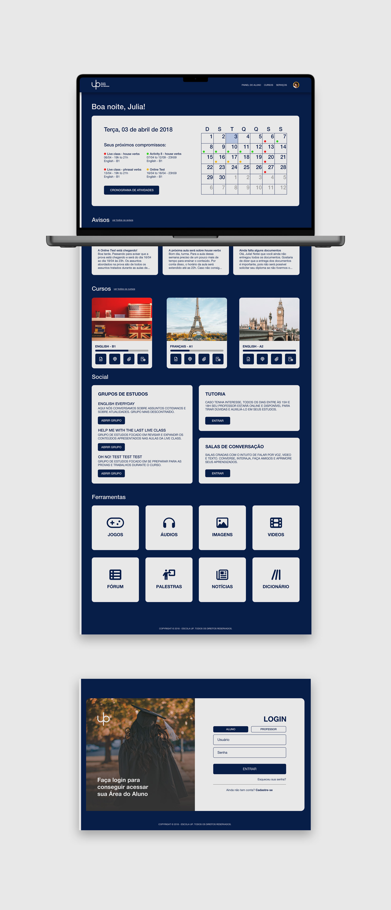
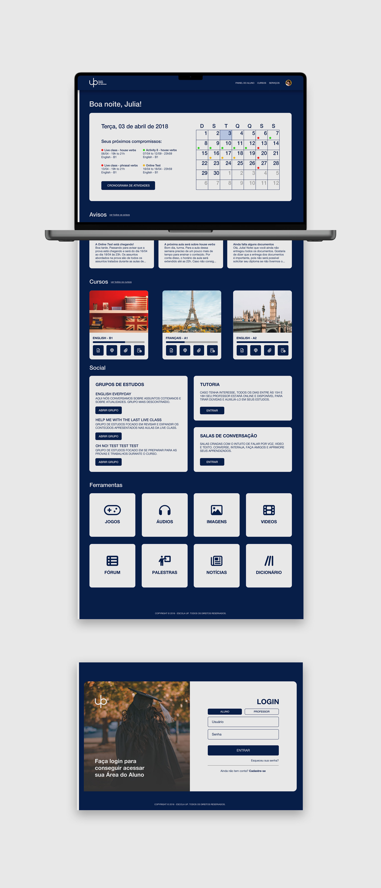

A UP é uma escola online focada no ensino de idiomas (inglês, francês e português). Sua metodologia única e moderna compete com as melhores escolas do mundo. Os principais diferenciais da UP estão na qualidade das aulas, nos materiais de apoio e na liberdade dos professores.
O objetivo desse projeto era criar uma identidade visual alinhada aos valores da escola e criar uma plataforma leve que acolhesse tanto os alunos quanto os professores. Também era necessário criar algumas aplicações já que a UP envia algumas papelarias e alguns brindes aos alunos e professores da escola.


Optei por cores que não causassem muito esforço visual, visto que os alunos e professores passarão muito tempo em contato com a plataforma da UP, e que o objetivo é uma identidade leve. O azul como cor primária aumenta a produtividade e a confiança, atributos importantes num ambiente de estudos. Já o branco traz força de vontade e atitude para iniciar algo novo. Além da ótima legibilidade/leiturabilidade, as duas cores juntas causam sentimentos de paciência e calmaria.
Para escolher a tipografia, eu preferi trabalhar com alguma que atendendesse os requisitos de legibilidade/leiturabilidade em plataformas digitais e tivesse uma ampla cobertura de todos os caracteres codificados. Com isso, a plataforma ficou mais agradável e suporta todos os idiomas oferecidos atualmente e futuramente.


O site da UP vem com 3 necessidades importantes a serem supridas: organizar a vitrine de vendas dos seus cursos para propagar mais clientes, construir uma plataforma interativa de ensino a distância que aumente a produtividade dos alunos e criar uma seção destinada a professores com intuito de facilitar seu trabalho (uma área com o cronograma e planejamento, área de feedback dos alunos e uma área de ferramentas de auxílio na criação de planos de aula e auxílio ao dar notas nos trabalhos e provas dos alunos).

 


A UP tinha o desejo de se aproximar mais do público e fixar melhor o posicionamento da marca, além de prospectar novos clientes. Foram definidos 6 tópicos para a criação de conteúdo e ações de marketing da UP, mostrados a seguir:
- • Promoções e vendas;
- • Informações sobre a empresa;
- • Fortalecimento da marca;
- • Lembretes e avisos;
- • Dicas, recomendações e motivações;
- • Depoimentos, avaliações e feedbacks.
Baseado nesses tópicos, criei as artes de base para os meios que a empresa desejava utilizar.